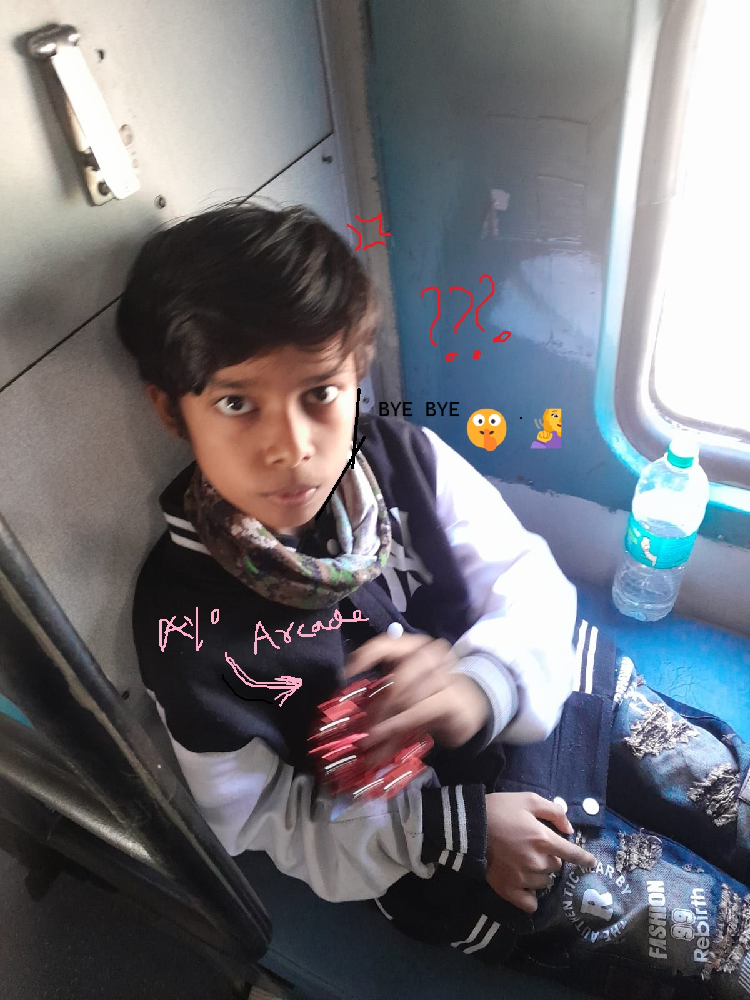

Your browser does not support the audio element.
Toggle Mute
CONGRATULATIONSS !!!!!
Good job nigga Now nere iri

Shall we walk you down through your life now and solve some puzzles?
dont click 'yeah'
Yes
Yeah